安平釣點分析#
1. 資料出處#
資料來源： 海洋保育資料倉儲系統 - iOcean垂釣回報平台
資料內容： 資料來自Ocean垂釣回報平台。該平台允許使用者即時記錄釣魚位置、漁獲種類及數量，方便漁民或釣客回報漁獲。
使用期間： 2018-05-20 至 2024-07-03 。
2. 資料處理#
在本次分析中，分別使用 ArcGIS 與 QGIS 兩款地理資訊系統工具，處理 iOcean 垂釣回報平台的數據。資料涵蓋 2018 年至今的所有垂釣回報點，每個點代表一次回報。通過對比 ArcMap 和 QGIS 在數據處理與分群視覺化上的表現，來探討兩者在工具功能與使用體驗上的差異。
資料匯入：
使用
ArcMap和QGIS分別匯入 iOcean 提供的點位資料。將坐標點位轉換為統一的
WGS84。
範圍篩選：
手動繪製安平港的範圍
Shapefile。使用空間查詢功能篩選出在安平港範圍內的回報點，並輸出新的點位分佈。
分群分析：
使用
DBSCAN演算法進行點位分群，設定合適的距離閾值與最小群內點數。
工具比較：ArcMap vs QGIS#
ArcMap#
(I)資料匯入界面：
使用工具：
Display XY Data
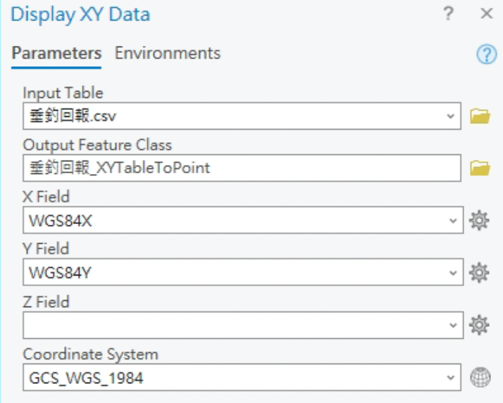
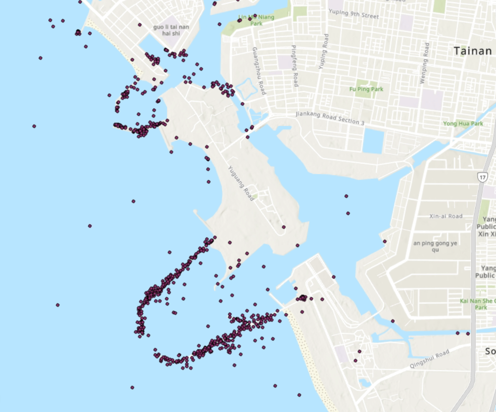
(II)範圍篩選：
繪製安平港的範圍 Shapefile，並使用空間查詢功能篩選出在安平港範圍內的回報點，再輸出成新的點位分佈。
使用工具：
Select Layer By Location
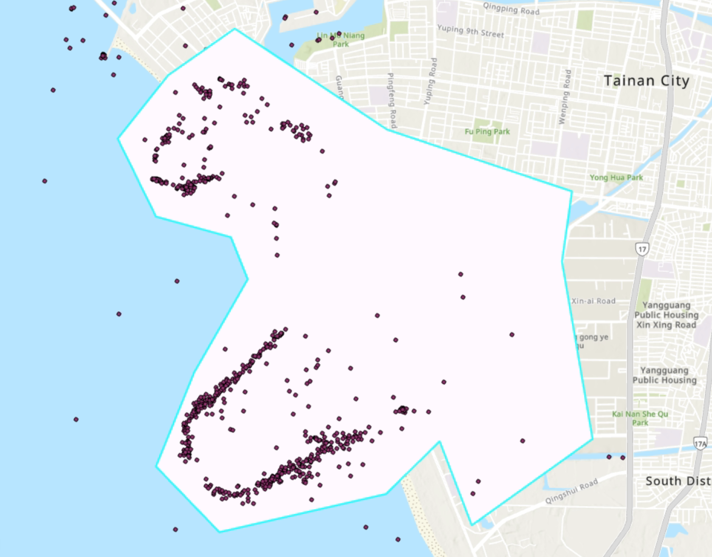
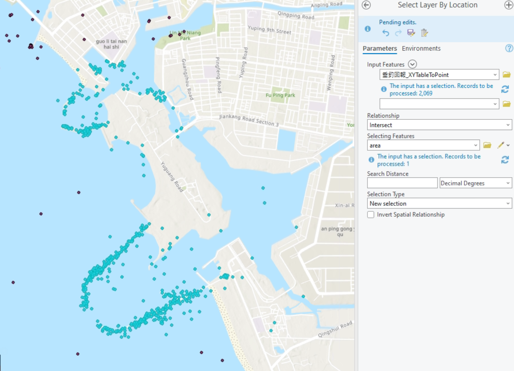
(Ⅲ)分群過程：
使用 DBSCAN 進行分群，距離閾值：100m、最小群內點數：3。結果可看出已順利由顏色區分出數個釣點。
使用工具：
Density-based Clustering
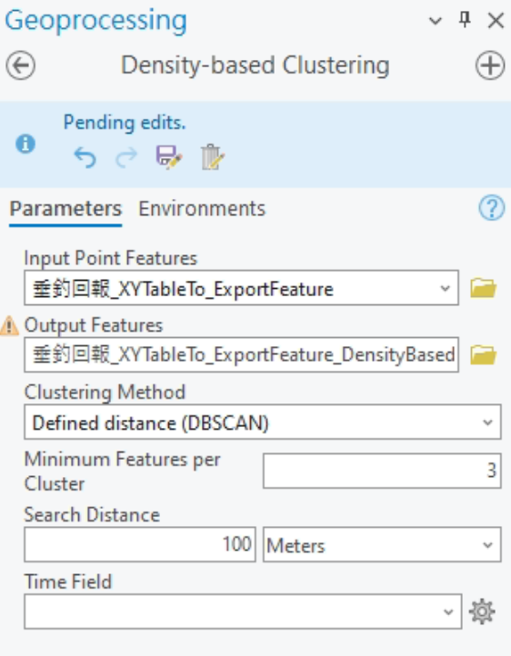
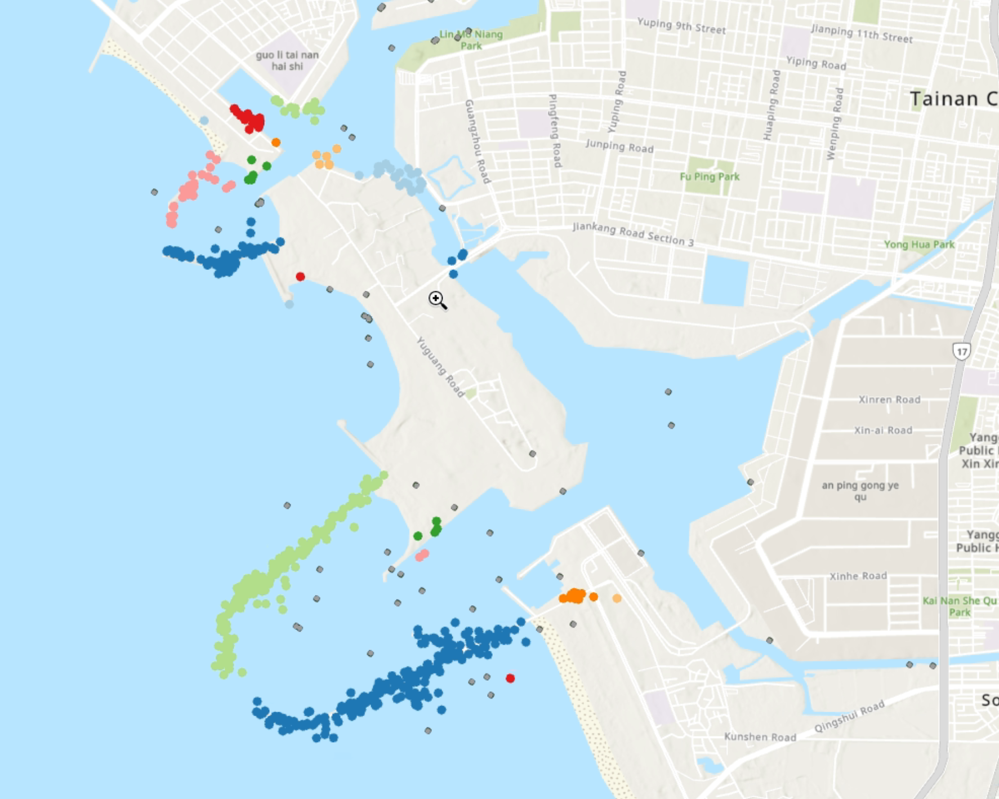
QGIS#
(I)資料匯入界面：
使用工具：
Add Spreadsheet Layer
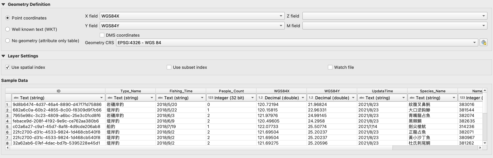
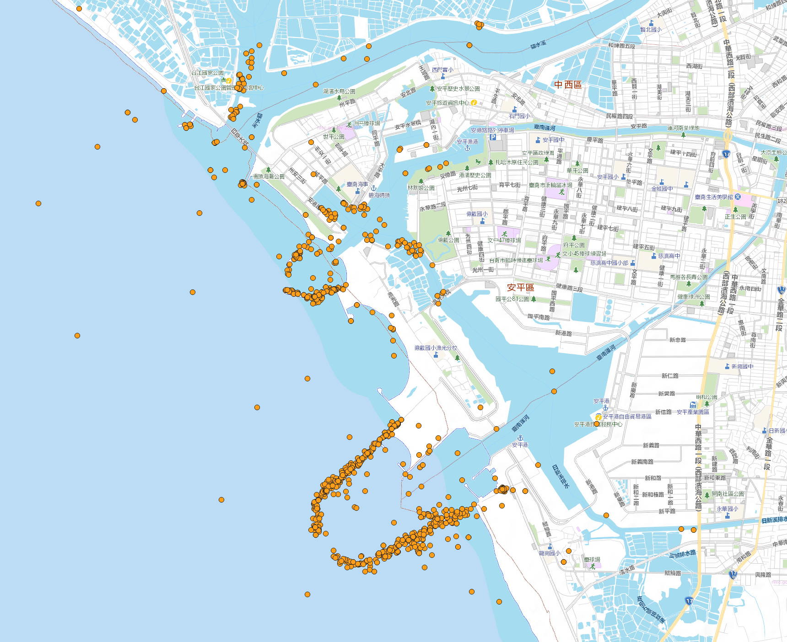
(II)範圍篩選：
繪製安平港的範圍 Shapefile，並使用空間查詢功能篩選出在安平港範圍內的回報點，再輸出成新的點位分佈。
使用工具：
Select by Location
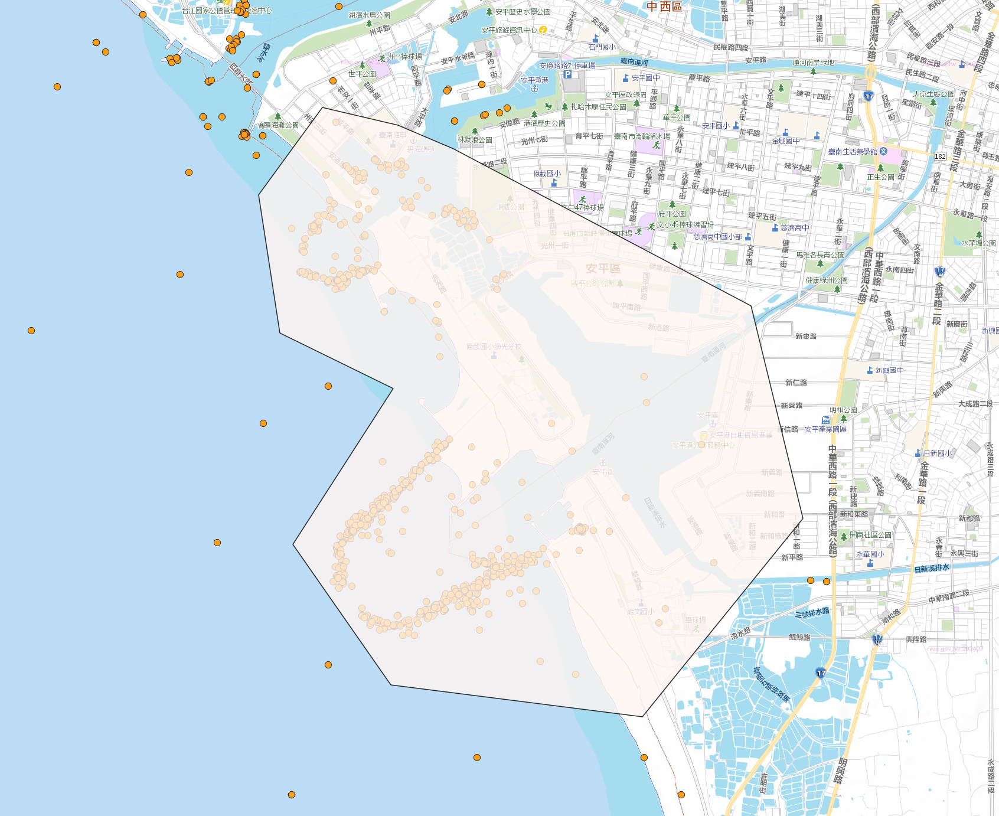
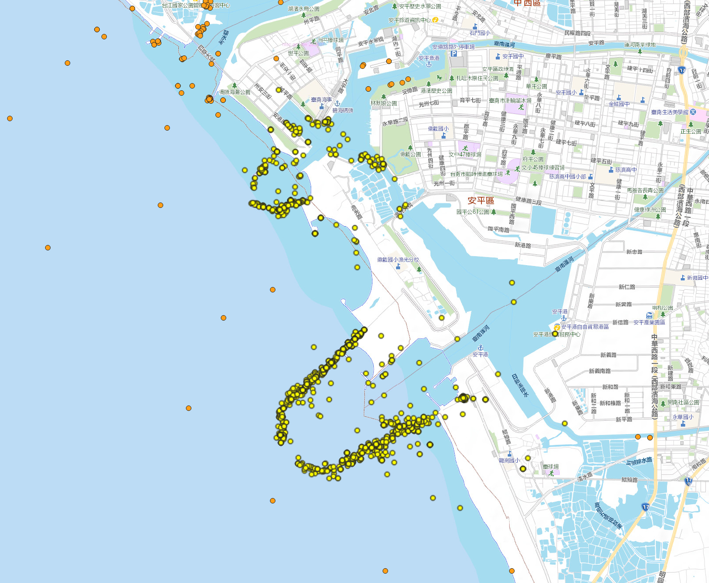
(Ⅲ)分群過程：
使用 DBSCAN 進行分群，距離閾值：100m、最小群內點數：3。結果可看出已順利由顏色區分出數個釣點。
使用工具：
DBSCAN clustering
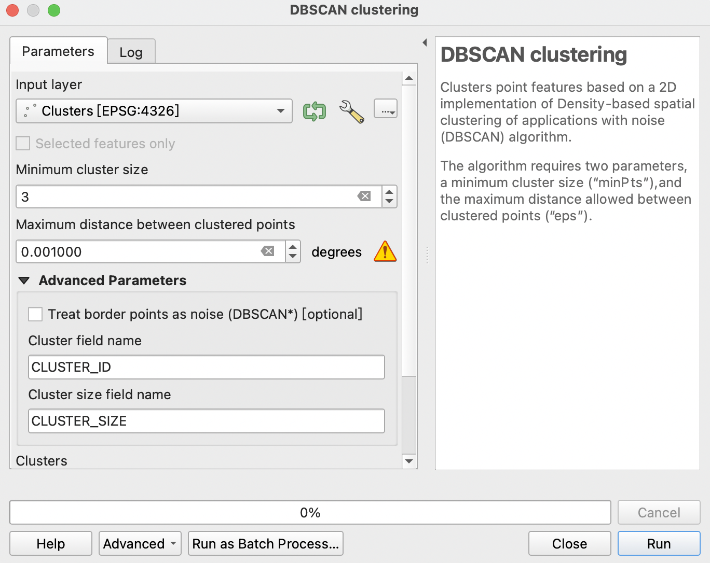
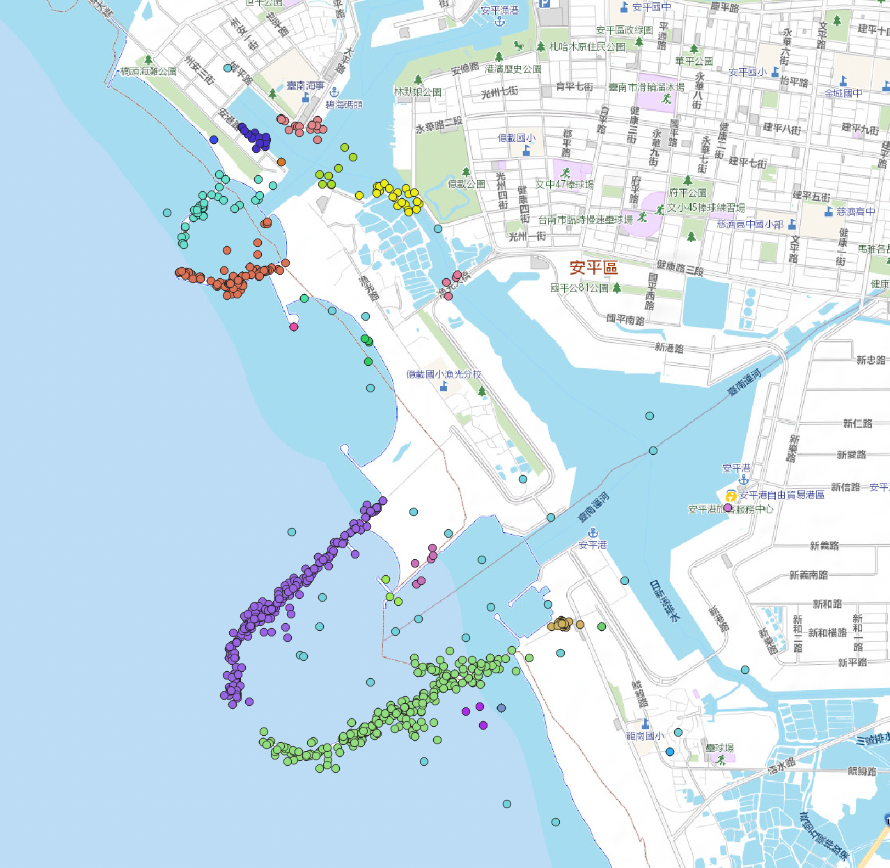
ArcMap vs QGIS 比較#
進行 DBSCAN 分群分析中，ArcGIS 和 QGIS 在功能和結果上並沒有顯著差異。兩者都能準確地進行分群，並將結果以直觀的地圖形式呈現。然而，從使用體驗、性能和成本考量方面仍有所差異。
成本考量
QGIS 作為一個開源且完全免費的 GIS 平台，非常適合廣大用戶，尤其是學術研究者、非營利組織以及中小型團隊。相較之下，ArcGIS 的授權費用較高，雖然功能強大，但對於沒有特殊需求或預算限制的使用者來說，QGIS 是更具成本效益的選擇。
性能表現
本次執行 DBSCAN 分群時，ArcGIS 的運算時間較長，尤其是處理大範圍數據或高密度點位時更為明顯。相比之下，QGIS 的處理速度明顯較快。
界面操作
ArcGIS 提供一個簡潔又直觀的用戶界面。而 QGIS 的操作介面較為複雜，同樣操作下步驟可能會比較多。
擴展性
ArcGIS 官方有提供工具和擴展功能，但其大部分擴展需要額外付費。相對而言，QGIS 社群活躍，插件種類繁多，幾乎涵蓋所有 GIS 分析功能，並且完全免費。
作業系統支援
ArcGIS 僅支援 Windows、Linux，而 macOS 方面僅支援擁有 Intel 處理器的 Mac。QGIS則是 Windows、Linux，以及 macOS 三者皆完全支援。